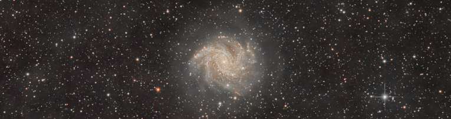
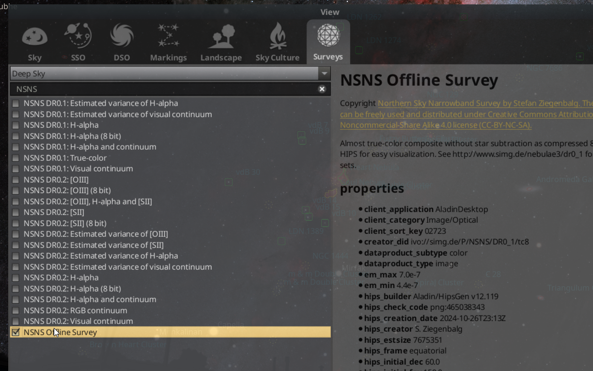

The standard survey in Stellarium is as boring and uninformative as possible. Here I will show you how to make it much better.
Download survey using this script:
HIPS-survey-downloader
Configure Stellarium:
Add these lines to the config.ini file (%appdata%/Stellarium):
[hips]
show = true
sources/1/url = file:///E:/survey/NSNS_DR_01_tc8/hipslist
sources/2/url = http://alasky.u-strasbg.fr/MocServer/query?*/P/*&get=record
sources/3/url = https://data.stellarium.org/surveys/hipslist
sources/size = 3
surveys/1/url = file:///E:/survey/NSNS_DR_01_tc8
surveys/size = 1
Add configuration files:
Add these two files to the root directory of your HiPS survey. (if the survey is different, you need to change the contents of the files, plus change the path to the root folder of the survey):
properties file:
obs_description = Almost true-color composite without star subtraction as compressed 8-bit color HIPS for easy visualization. See http://www.simg.de/nebulae3/dr0_1 for other data sets.
prov_progenitor = Calculated from 5" intermediate data of the Northern Sky Narrowband Survey DR0.1, see http://www.simg.de/nebulae3/dr0_1
obs_copyright = Northern Sky Narrowband Survey by Stefan Ziegenbalg. The material can be freely used and distributed under Creative Commons Attribution-Noncommercial-Share Alike 4.0 license (CC-BY-NC-SA).
obs_copyright_url = http://www.simg.de/nebulae3/dr0_1
obs_regime = Optical
client_category = Image/Optical
client_sort_key = 02723
client_application = AladinLite
client_application = AladinDesktop
em_min = 4.4e-7
em_max = 7.0e-7
t_min = 58432
t_max = 59826
hips_service_url = file:///E:/survey/NSNS_DR_01_tc8
creator_did = ivo://simg.de/P/NSNS/DR0_1/tc8
hips_creator = S. Ziegenbalg
obs_title = NSNS Offline Survey
hips_builder = Aladin/HipsGen v12.119
hips_version = 1.4
hips_release_date = 2025-06-07T16:33Z
hips_frame = equatorial
hips_order = 5
hips_order_min = 0
hips_tile_width = 512
hips_status = public
hips_tile_format = png
hips_initial_ra = 60.0
hips_initial_dec = 60.0
hips_initial_fov = 150.0
hips_pixel_scale = 0.003579
dataproduct_type = image
hips_rgb_red = Northern Sky Narrowband Survey, DR0.1, Red [0.0 NaN 1.0 Linear]
hips_rgb_green = Northern Sky Narrowband Survey, DR0.1, Green [0.0 NaN 1.0 Linear]
hips_rgb_blue = Northern Sky Narrowband Survey, DR0.1, Blue [0.0 NaN 1.0 Linear]
moc_sky_fraction = 0.651
hipsgen_date = 2024-10-26T23:13Z
hipsgen_params = inRed=./tc8-0 inGreen=./tc8-1 inBlue=./tc8-2 out=./tc8 id=simg.de/P/NSNS/DR0_1/tc8 "title=Northern Sky Narrowband Survey, DR0.1, True-color" "pixelcut=0 1" "datarange=0 1" "creator=S. Ziegenbalg" "target=60 60 150" "status=public master clonable" RGB ALLSKY CHECKCODE DETAILS
hips_creation_date = 2024-10-26T23:13Z
hips_overlay = overlayMean mergeOverwriteTile treeMedian
hips_estsize = 7675351
hips_nb_tiles = 10729
dataproduct_subtype = color
hips_check_code = png:465038343
hipslist file:
creator_did = ivo://simg.de/P/NSNS/DR0_1/tc8
obs_title = NSNS Offline Survey
hips_release_date = 2025-06-07T16:33Z
hips_service_url = file:///E:/survey/NSNS_DR_01_tc8
hips_status = public
hips_order = 5
hips_tile_format = png
dataproduct_type = image
moc_sky_fraction = 1
Directory structure:
Your survey directory should look like this:
E:\SURVEY\NSNS_DR_01_TC8
+---hipslist
+---properties
+---Norder0
| \---Dir0
+---Norder1
| \---Dir0
+---Norder2
| \---Dir0
+---Norder3
| \---Dir0
+---Norder4
| \---Dir0
\---Norder5
+---Dir0
\---Dir10000
Final result:
After that, go to Stellarium -> F4 -> Surveys and find the offline survey!
